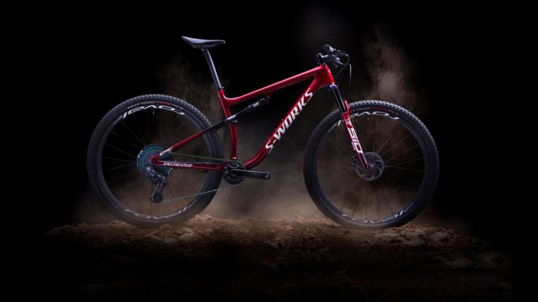

¿Quienes somos?
Somos una empresa dedicada al alquiler de bicicletas en Medellín, con el objetivo de ofrecer una alternativa de transporte sostenible y ecológica.
Ver nuestra ubicaciónBienvenido a rueda libre el mejor lugar de bicicletas
Somos una empresa dedicada al alquiler de bicicletas en Medellín, con el objetivo de ofrecer una alternativa de transporte sostenible y ecológica.
Ver nuestra ubicaciónPara alquilar una bicicleta, puedes seguir estos pasos:

Rueda Libre es tu mejor opción para disfrutar de la ciudad en bicicleta.

Alquila una bicicleta y recorre Medellín de manera divertida y saludable.
Descubre nuestra ubicación:

Nuestra tienda se encuentra en la ciudad de Medellín, en la dirección: Calle 10 # 20-30, Medellín, Colombia.
Ver ubicación en Google MapsSi deseas contactarnos, puedes hacerlo a través de nuestro correo electrónico: info@ruedalibre.com
Enviar correo